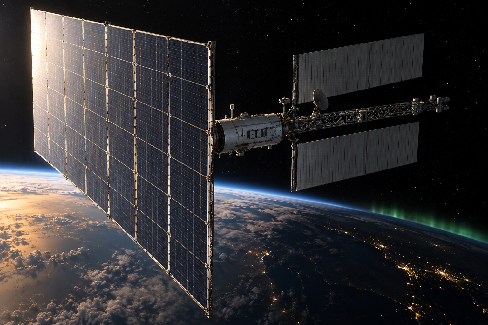
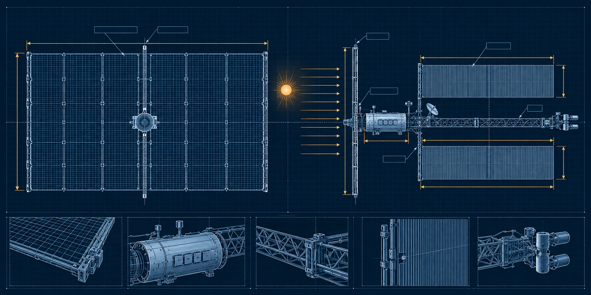
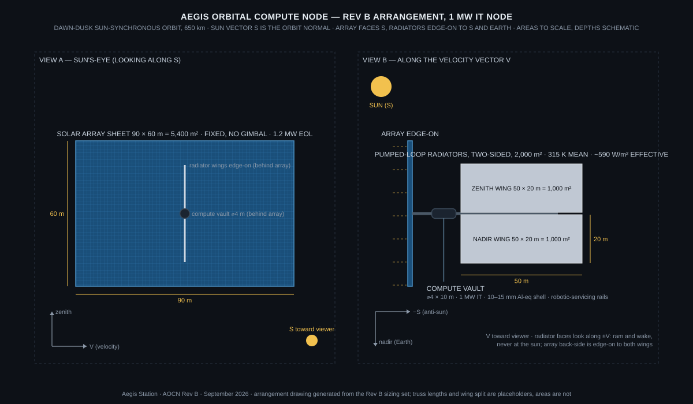

The Aegis Orbital Compute Node (AOCN) is a free-flying compute unit: one megawatt of commercial accelerators in a shielded vault, a fixed solar sheet that faces the sun all year, and pumped-loop radiators that never see it. It runs batch work: model training, large-scale inference, simulation, and the processing of data that is already in orbit. It does not run a cloud. Nothing on it answers a request in milliseconds, and nothing on it needs to.
The node is the unit of scale. Capacity grows by flying more of them, not by making one bigger. Every node is sized, launched, and serviced the same way, and the compute inside is expected to be replaced every three to five years while the power and thermal plant stays.
The honest case is narrower than the slogans and stronger than the sceptics allow. Three things are true at once.
Terrestrial AI capacity is gated by interconnect queues measured in years, by water for cooling, and by siting permits. In orbit none of those exist. Power is not free; it costs launched array mass. But a square metre of array in a dawn-dusk orbit produces about four and a half times the energy of the same square metre on the ground, because it is lit 100 % of the time at full solar constant and needs no storage. The question is whether that buys back the launch cost, and the economics section answers it with a number rather than a mood.
Training a large model is weeks of computation on a dataset that arrives once and a result that leaves once. That is the opposite of a cloud workload. The dataset goes up on launched storage: ten petabytes on enterprise SSDs is under 200 drives and well under half a tonne. Checkpoints and weights come down over optical crosslinks. A dawn-dusk orbit passes a polar ground station on nearly every revolution, so downlink capacity is not the limit. The data section sizes it.
Earth-observation constellations downlink raw data they could process in orbit. Cislunar operations, when they exist, will want compute that is seconds away rather than a round trip through Earth. This is the only case with no terrestrial competitor. It is also the smallest market today, which is why AOCN is not designed around it. It is designed so that the same node serves it when it arrives.
| Leg | Method | Capacity | Note |
|---|---|---|---|
| Dataset up | Launched solid-state storage, installed with each compute refresh | 10 PB ≈ 164 × 61 TB drives, < 0.5 t | Cheaper and faster than any uplink; refreshed with the trays it feeds |
| Results down | Optical to polar ground stations, Ka-band RF fallback | ~110 TB/day at 100 Gb/s over ~150 min of contact | A 1 TB checkpoint at 10 Gb/s takes ~13 min; weather handled by station diversity |
| Tasking and telemetry | RF, continuous via relay | kb/s to Mb/s | Autonomous operation between contacts; ground plans, node executes |
| Node to node | Optical crosslink within a plane | 10–100 Gb/s | For distributed training across nodes in the same orbit plane; not required for a single node |
Dawn-dusk sun-synchronous orbits cross both poles every ~97 minutes. A single high-latitude optical terminal sees the node on most passes; two terminals on different continents cover weather.
Rev 1.1 assumed a generic 500–600 km orbit with a 35 % worst-case eclipse and either 2.6 t of battery per megawatt or a throttled duty cycle. The battery figure was cell-level; at a LEO-survivable depth of discharge and pack overhead it is closer to 12 t per node. Either penalty is avoidable.
A dawn-dusk sun-synchronous orbit keeps its plane at the day-night terminator all year. The sun sits within about 24° of the orbit normal. Above roughly 620 km the Earth never gets between the node and the sun, at any season. AOCN Rev B baselines 650 km.


At steady state every watt of electrical input becomes heat. Commercial accelerators hold junction temperatures below about 363 K; direct liquid cooling delivers coolant at 305–320 K and returns it 10–15 K warmer. The radiator therefore runs between roughly 330 K inlet and 305 K outlet, a 315 K mean radiating temperature. Rev 1.1 stated 290–330 K; the same range, now pinned to a sizing point.
Two-sided rejection follows the Stefan-Boltzmann law with an emissivity of 0.88. An effective factor of 0.6 covers Earth infrared on the oblique face, view-factor losses between wings, coating degradation, and fin efficiency. With the array shading the wings and no direct solar load, this factor is conservative.
| Mean radiating temperature | Two-sided, theoretical | Effective (× 0.6) | Area per MW rejected |
|---|---|---|---|
| 300 K | 808 W/m² | 485 W/m² | 2,060 m² |
| 310 K | 922 W/m² | 553 W/m² | 1,810 m² |
| 315 K (baseline) | 983 W/m² | 590 W/m² | 1,700 m² |
| 320 K | 1,046 W/m² | 628 W/m² | 1,590 m² |
| 330 K | 1,183 W/m² | 710 W/m² | 1,410 m² |
The node rejects 1.2 MW, so the baseline radiator area is ~2,000 m² two-sided, carried as two 50 × 20 m wings on a pumped single-phase loop with redundant pumps and isolable sections. At 6 kg/m² for deployable pumped-loop panels the wings weigh about 12 t. If a future accelerator generation tolerates hotter coolant, the same wings reject more; the plant does not need to change when the trays do.
Rev 1.1 sized the array at ~2,500 m² per MW from beginning-of-life cell efficiency at normal incidence. That is the number for a new panel pointed perfectly on the day it deploys. The array has to make 1.2 MW on its last day, at its worst sun angle, through a blanket that is not all cells.
| Step | Factor | Running value |
|---|---|---|
| Solar constant × 29 % triple-junction GaAs | — | 395 W/m² |
| Blanket packing (cells, gaps, harness, hinges) | 0.85 | 336 W/m² |
| Radiation degradation, 10 years in a polar orbit | 0.85 | 285 W/m² |
| Operating temperature derate | 0.85 | 243 W/m² |
| Worst-season sun angle, fixed array (cos 23.4°) | 0.92 | 223 W/m² end-of-life |
Rev 1.1 carried 15–50 t of water and structure as shielding for a compute payload. That is a crew figure applied to electronics. Silicon does not need a storm shelter; it needs a tolerable total dose, a handled upset rate, and a refresh plan.
| Group | Basis | Mass (t) |
|---|---|---|
| Solar array sheet | 5,400 m² at 2.5 kg/m² deployable blanket | 13.5 |
| Radiator wings and loop | 2,000 m² at 6 kg/m² pumped-loop panel | 12.2 |
| Compute trays and storage | 1 MW IT at ~12 kg/kW, liquid-cooled rack density | 12.0 |
| Vault structure and shielding | ⌀4 × 10 m shell, 10–15 mm Al-equivalent, rails | 5.0 |
| Power conversion, distribution, pumps, fluid, avionics, comms | Allocation | 5.0 |
| Truss, deployment mechanisms, attitude control, electric propulsion and propellant | Allocation | 7.0 |
| Subtotal | 54.7 | |
| Growth margin, 20 % | 10.9 | |
| Node mass | ~65 |
Rev 1.1 carried 40–80 t for 200–500 kW of accelerator. Rev B carries ~65 t for 1,000 kW. The change is not optimism; it is the removal of the water shield and the batteries, and the accounting of compute at the density liquid-cooled racks actually achieve. The refresh cycle relaunches only the 12 t of trays.
Both an orbital node and a terrestrial hall buy the same accelerators, and those dominate the bill either way: on the order of $40–50 M per megawatt of current-generation hardware. What differs is the plant around them. A terrestrial AI hall costs roughly $10–15 M per MW to build, plus around $0.6–0.9 M per MW-year in energy. Over a five-year hardware life that is about $15–20 M per MW of plant and power, before the years spent waiting for an interconnect.
The orbital node replaces all of that with launch mass. At 65 t per megawatt:
| Launch price | Launch cost per MW node | Against $15–20 M terrestrial plant + power |
|---|---|---|
| $3,000 /kg | $195 M | 10× worse |
| $1,500 /kg | $98 M | 5× worse |
| $500 /kg | $33 M | ~2× worse |
| $300 /kg | $20 M | parity |
| $200 /kg | $13 M | better |
| $100 /kg | $7 M | 2–3× better |
The crossover sits near $300 per kilogram to sun-synchronous orbit, before counting on-orbit assembly, qualification, and the operations team, which push it lower, and before counting the value of skipping a multi-year grid queue, which pushes it higher. That price does not exist today. It is the stated goal of fully reusable heavy launch, and the point of writing the number down is that it is a launch-price gate, not a technology gate. Everything else on this page is buildable now.
Nothing in the node gets easier when it gets bigger. Deployed area, bending modes, pointing disturbance, fault-domain size, and the mass of any single failure all grow faster than the compute they carry. A 1 MW node is already a 90 m sheet with 50 m wings. The unit is fixed and the fleet grows.
The node does not care which body it orbits, but the case does. Around the Moon or Mars there is no advantage until there are customers there, and the Earth link gets worse. Where the case changes is the lunar surface, and only one part of it.
The daytime surface is not a cold sink. At the equator it reaches ~390 K at noon for two weeks, and regolith is an insulator, so nothing conducts into the ground worth counting. A radiator on the day side of the Moon looks at hot ground and a hot sun for 14 days and then at nothing but darkness for 14 more, with no power.
The polar surface is different. Rim sites near the south pole are lit 80–90 % of the year at grazing angles, and next to them are permanently shadowed floors at 40–100 K. A vertical radiator on a rim, facing the shadowed floor and the cold sky, rejects about 490 W/m² one-sided at 315 K with no Earth infrared and no solar load. Per square metre that is comparable to the orbital wing. The difference is everything around it: no launch of the plant from Earth once regolith structure and local water are available, no deployment mechanisms, radiators that can be built as walls, and the program's own water on site for thermal storage across the short polar nights.
The LEO node is the near-term product and the testbed for the plant. The lunar polar node is where the plant stops being launched. That is the same gate the rest of the program is waiting on: a viable moonbase and industrial-scale lunar water.
| Item | Rev 1.1 | Rev B |
|---|---|---|
| Orbit | 500–600 km, generic; 35 % eclipse | 650 km dawn-dusk sun-synchronous; no eclipse |
| Eclipse storage | 2.6 t/MW battery or throttling | Safe-mode pack only |
| Accelerator load | 200–500 kW in a 1–2 MW bus | 1.0 MW IT, 1.2 MW electrical |
| Radiator area | 1,800–3,300 m²/MW at 290–330 K | ~1,700 m²/MW at 315 K mean; 2,000 m² per node |
| Solar area | ~2,500 m²/MW, beginning of life | ~4,500 m²/MW end of life; 5,400 m² per node |
| Shielding | 15–50 t water and structure | ~5 t aluminium vault; 3–5 year tray refresh |
| Node mass | 40–80 t | ~65 t, bottom-up with 20 % growth |
| Use case | "Power density, thermal isolation, space adjacency" | Batch training and inference; space-native data second |
| Data path | Not stated | Launched storage up, optical down, budget stated |
| Economics | Not stated | Break-even near $300/kg to SSO, shown as a table |
The Rev B architecture reference document carries the sizing set above with its bases, the mass budget, the economics table, and the lunar polar variant.